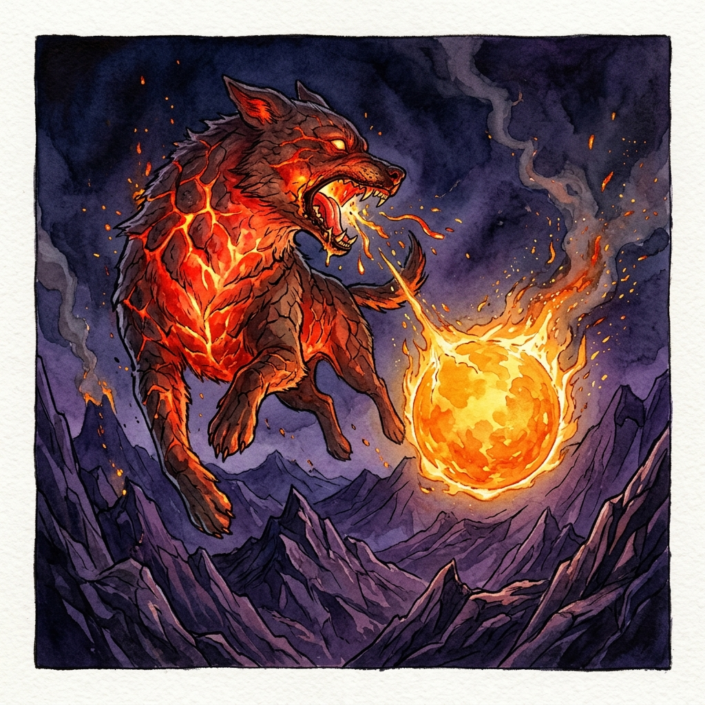

Long ago, when the heavens held many kingdoms, there was one that had never known the light. It was called Gamangnara, the Land of Darkness. No sun rose over its mountains, and no moon drifted across its sky. Its people lived in endless night, feeling their way from place to place, and their king grew more bitter with every passing year.
“Why should the other kingdoms have all the light?” he muttered. “If I cannot have a sun of my own, I will take theirs.”
Now, the king had no army that could climb the sky, but one of his subjects kept a pack of bulgae, the fire dogs. They were savage creatures, swift as the wind, with bodies that glowed like embers and jaws that had never let go of anything they had bitten. The king summoned the boldest of them and gave his command: “Bring me the sun.”
The fire dog bounded up into the heavens and leapt at the great golden disc, jaws wide. But the sun burned hotter than any fire the dog had ever known. It scorched his tongue and seared his throat, and he yelped, dropped the sun, and fled back to the dark.
The king was furious. “Fool! Then bring me the moon. It is gentle and cool. Even a puppy could carry it.” He chose the fiercest, most ferocious dog in his kingdom and sent it racing after the moon.
The dog clamped down on the pale silver disc, and at once his mouth froze. The moon was colder than the deepest winter ice. His teeth ached and his tongue went numb. Again and again he tried to bite down, snarling and shaking his head, but it was no use. At last he gave up and crept home with his tail between his legs.
Did the king give up? Never. He sent more fire dogs, and then more after them, and they have been trying ever since. Every one of them has failed. But sometimes a dog gets close enough to sink in his teeth, and then a dark shadow creeps across the sun at midday, or the moon dims and vanishes in the night sky.
That is an eclipse. The dark part is the place where a fire dog from Gamangnara has bitten down. Before long the heat or the cold drives him off, and the sun or the moon shines whole again. In the old days, people would bang drums and pots to frighten the dogs away, just to be safe.
